0.6. Математическая модель деформирования конструкций вращения
0.6.1. Основные соотношения для круговых шпангоутов
0.6.2. Предварительно напряженные шпангоуты
0.6.3. Задачи статики и динамики
0.6.5. Матрицы и векторы реакций полюсных элементов
0.6.6. Матрицы и векторы реакций оболочечных элементов в глобальной системе координат
0.6.7. Алгоритмы решения задач статики и динамики для конструкций
0.6.8. Еще один алгоритм решения задач динамики (метод Фурье)
0.6.1. Основные соотношения для круговых шпангоутов
В
качестве расчетной схемы кругового шпангоута рассматривается круговое
кольцо, размеры поперечного сечения которого малы по сравнению с
расстоянием
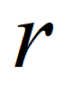
Предполагается,
что деформации
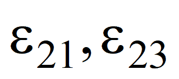
Положение
точки кольца определим координатами
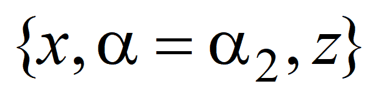
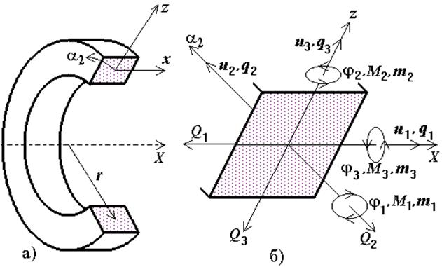 |
|
| Рис. 1 |
Перемещения
точки, расположенной на срединной линии кольца, в направлениях
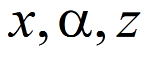 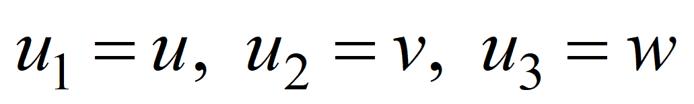 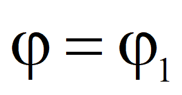
Углы
поворота поперечного сечения относительно осей
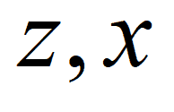
|
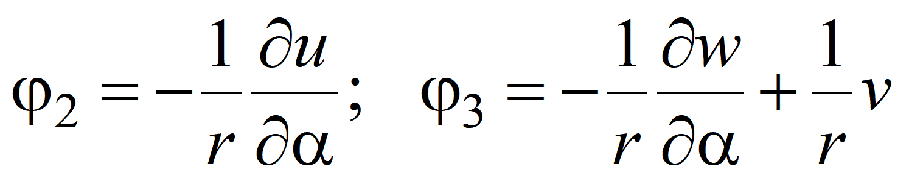 . |
(1) |
Относительное удлинение срединной линии кольца выражается через перемещения этой линии и углы поворота сечения по формуле
|
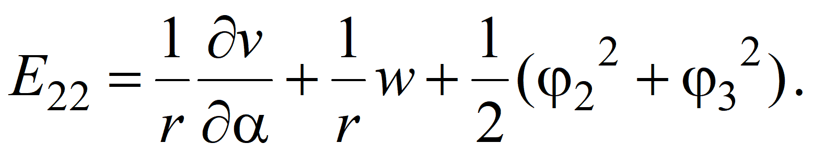 |
(2) |
Изменение кривизн и кручение срединной линии кольца выражаются через перемещения этой линии и углы поворота сечения по формулам
|
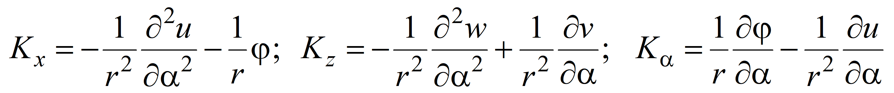 . |
(3) |
Деформация точки с координатами определяется по формуле
|
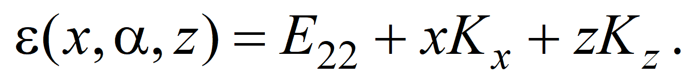 |
(4) |
Формулы (1)-(4) являются геометрическими соотношениями простейшего варианта нелинейной теории тонких круговых колец.
Пусть
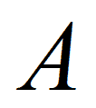
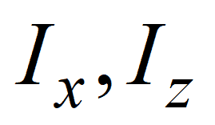 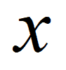 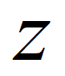
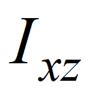
- центробежный момент инерции;
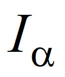
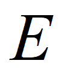 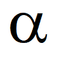
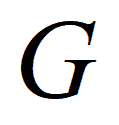 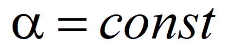
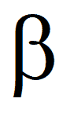
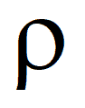
Тогда
нормальное напряжение в точке с координатами
 связано
с деформацией в этой точке соотношением
связано
с деформацией в этой точке соотношением
|
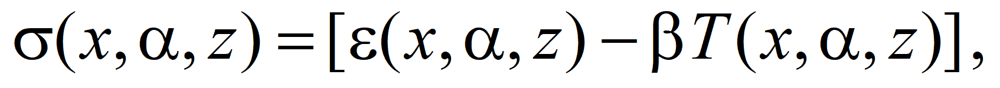 |
(5) |
где
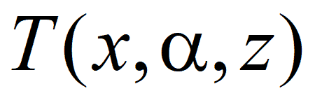 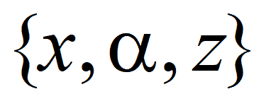
|
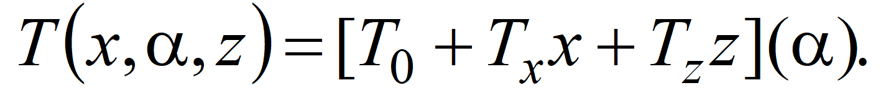 |
Физические соотношения в этом случае представляются в виде
|
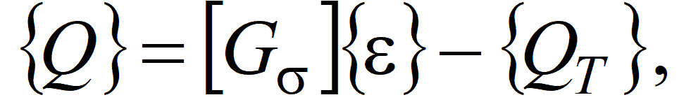 |
(6) |
где
|
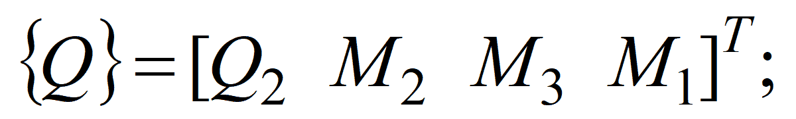 |
(7) |
|
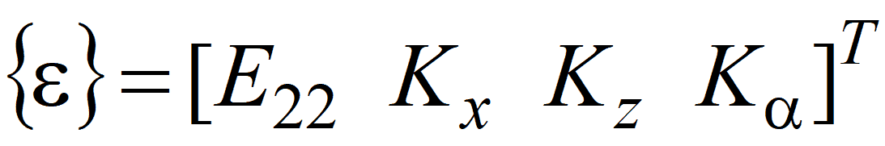 ; |
(8) |
|
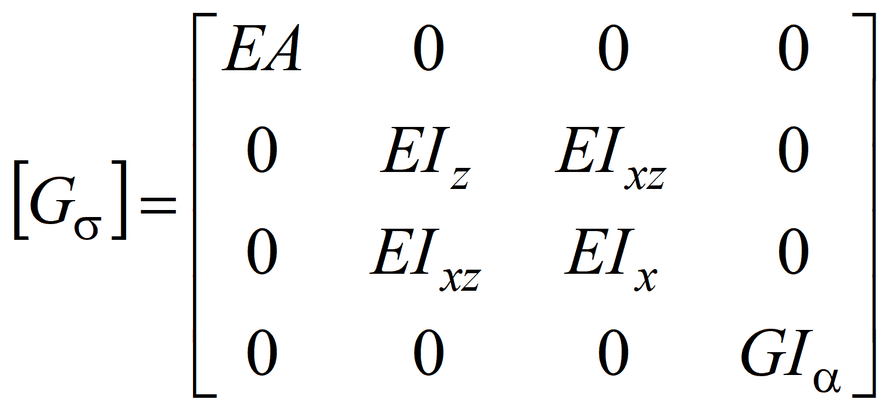 ; |
(9) |
|
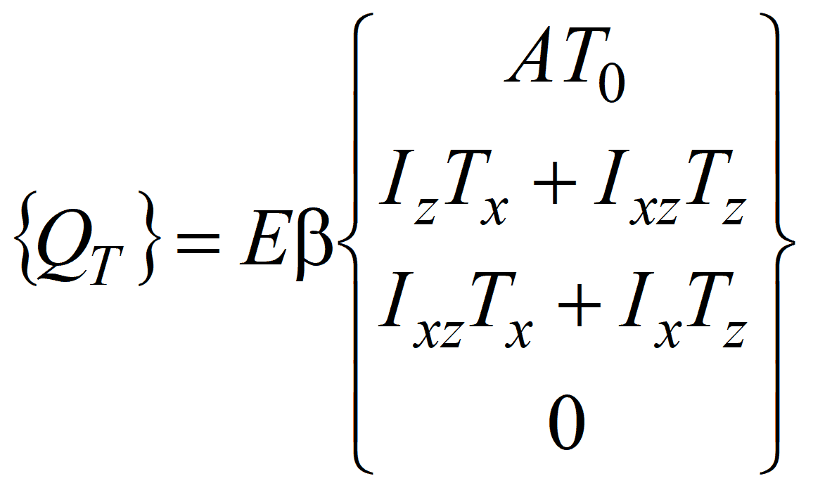 . |
(10) |
Предполагается, что в срединной линии шпангоута приложены приведенные к этой линии поверхностные и объемные нагрузки
|
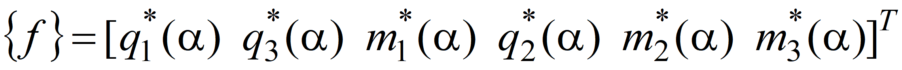 , |
(11) |
положительные направления которых показаны на рис. 1.
С учетом инерционных нагрузок приведенные к срединной линии шпангоута нагрузки можно представить в форме
|
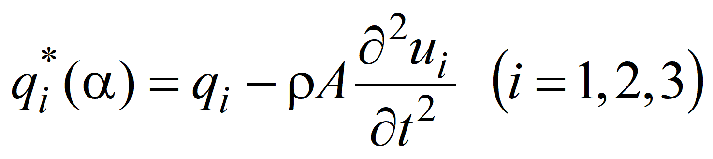 ; |
|
| ; | |
|
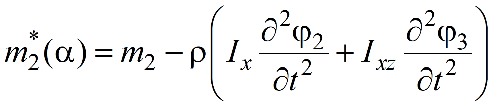 ; |
|
|
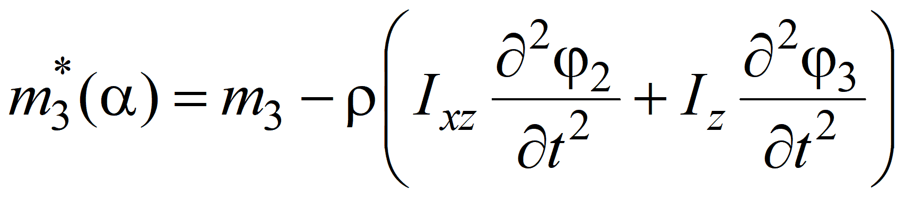 . |
Тогда нелинейные уравнения движения кругового кольца записываются в следующем виде
|
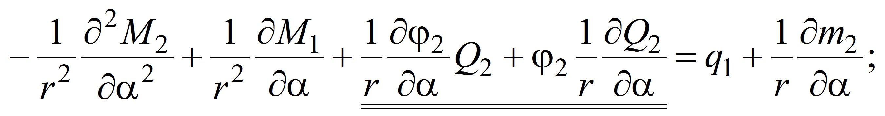 |
(12) |
|
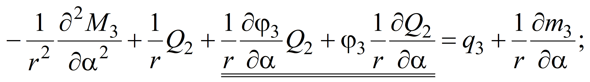 |
|
|
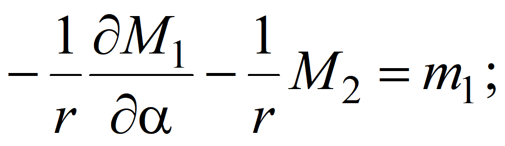 |
|
|
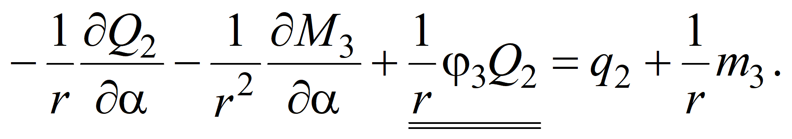 |
Система 14-ти дифференциальных и алгебраических уравнений (1)-(3), (6), (12) с 14-ю неизвестными
|
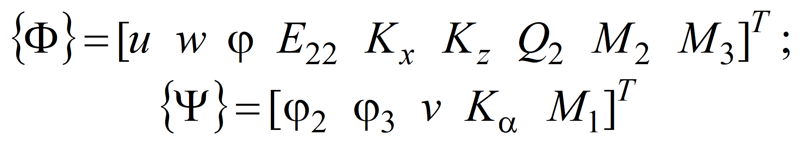 |
описывает нелинейную деформацию упругого кругового кольца.
0.6.2. Предварительно напряженные шпангоуты
Предположим, что кольцо имеет некоторое начальное НДС и получает отклонение от этого состояния вследствие приложения некоторой системы дополнительных внешних воздействий. Далее следуем рассуждениям п. «0.4.2. Линейная деформация предварительно напряженных оболочек».
Дополнительные внешние статические воздействия представляются в виде рядов Фурье
|
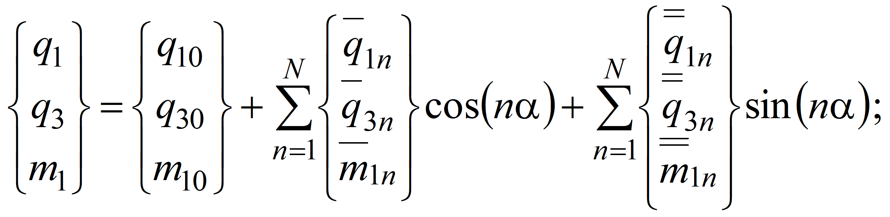 |
(13) |
|
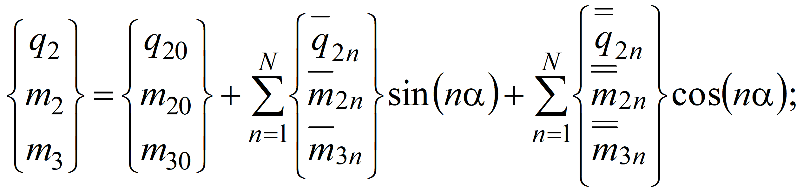 |
(14) |
|
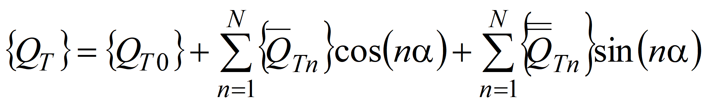 , |
(15) |
а решение полученной системы разыскивается в виде рядов (формулы (23) из. п. «0.4. Статика и динамика оболочек вращения»).
В
результате применения метода разделения переменных для
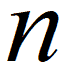
Геометрические соотношения имеют вид
|
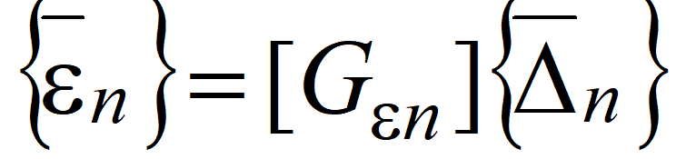 , |
(16) |
где
|
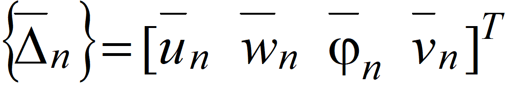 ; |
(17) |
|
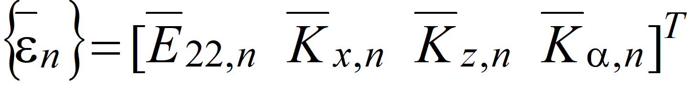 ; |
(18) |
|
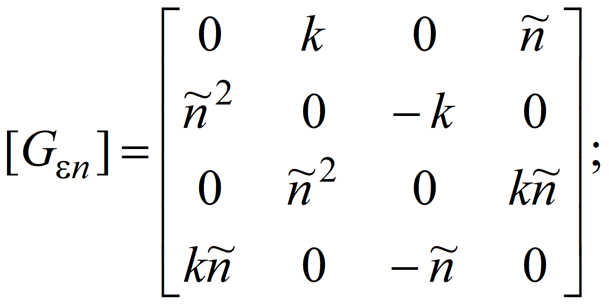 |
(19) |
| . | (20) |
Физические соотношения записываются в форме
| . | (21) |
Основополагающие матрицы и векторы метода конечных элементов в глобальной системе координат конструкции имеют вид:
матрица реакций
| ; | (22) |
матрица масс
| ; | (23) |
матрица начальных усилий
| . | (24) |
0.6.3. Задачи статики и динамики
Уравнения статического равновесия предварительно напряженного кругового кольца имеют вид
| , | (25) |
где
| . | (26) |
Пусть внешние нагрузки изменяются по гармоническому закону:
| (27) |
где - частота возбуждения нагрузки.
Тогда уравнения равновесия предварительно напряженного кругового кольца имеют вид
| . | (28) |
Однородные уравнения для определения собственных частот колебаний имеют вид
| (29) |
Значения , при которых существует нетривиальное решение этой системы, являются собственными частотами кругового кольца.
Пусть
внешние нагрузки и температура пропорциональны некоторому параметру
 .
.
Однородные уравнения устойчивости кругового кольца имеют вид
| (30) |
Наименьшее значение параметра , при котором существует нетривиальное решение системы (30), является критическим параметром нагрузки.
Уравнения движения при произвольно изменяющейся нагрузке на -м шаге интегрирования по времени имеют вид (индекс для простоты опущен)
| , | (31) |
где
| . |
В качестве расчетной схемы упругих связей рассматриваются связи типа упругих пружин. Перемещения начала связи в направлениях обозначим через , конца связей - через . Тогда матрица реакций связей запишется в виде
| , | (32) |
где
| (33) |
Здесь - коэффициенты жесткости связей.
0.6.5. Матрицы и векторы реакций полюсных элементов
Система дифференциальных уравнений, описывающая поведение оболочек вращения, замкнутых в полюсе (рис. 2), имеет особенность: некоторые из коэффициентов при обращаются в нуль.
|
Рис. 2 |
Для устранения этой особенности в полюсе оболочки выделяется так называемый “полюсной элемент” с малым радиусом . Для определения матрицы и вектора реакций этого элемента применяется стандартная процедура МКЭ.
Идея применения этой процедуры демонстрируется ниже на примере осесимметрично нагруженной оболочки.
Вводятся следующие обозначения:
| (34) |
Выбираются функции обобщенных перемещений внутри элемента в виде
| , | (35) |
где
| . | (36) |
C учетом геометрических соотношений (1) из п. «0.4. Статика и динамика оболочек вращения» связь компонентов обобщенных деформаций с компонентами обобщенных перемещений можно записать в виде
| , | (37) |
где
| . | (38) |
Внутренние силовые факторы связаны с компонентами обобщенных деформаций соотношением
| , | (39) |
где коэффициенты матрицы вычисляются по формулам (31) из п. «0.3. Математическая модель деформирования оболочек» или (11) из п. «0.4. Статика и динамика оболочек вращения».
Матрица реакций полюсного элемента вычисляется по формуле
| , | (40) |
где .
Матрицу можно вычислить, проинтегрировав систему девяти обыкновенных дифференциальных уравнений первого порядка
| (41) |
на интервале с начальными данными =0. Значение можно выбрать, например, равным .
Интегрирование системы трех обыкновенных дифференциальных уравнений первого порядка
| (42) |
на интервале с начальными данными =0 обеспечивает вычисление вектора реакций от температуры. Здесь компоненты вектора вычисляются по формулам (32) из п. «0.3. Математическая модель деформирования оболочек» или (13) из п. «0.4. Статика и динамика оболочек вращения».
Интегрирование системы трех обыкновенных дифференциальных уравнений первого порядка
| (43) |
на интервале с начальными данными =0 обеспечивает вычисление вектора реакций от силовых нагрузок. Здесь компоненты вектора имеют вид .
Интегрирование системы девяти обыкновенных дифференциальных уравнений первого порядка
| (44) |
на интервале с начальными данными обеспечивает вычисление матрицы масс. Здесь компоненты матрицы вычисляются по формуле
| . |
0.6.6. Матрицы и векторы реакций оболочечных элементов в глобальной системе координат
Пусть -я оболочка соединена с -м (рис. 3) и -м кольцевыми элементами (аналогично рис. 3).
| Рис. 3 |
Тогда связь между торцовыми перемещениями этой оболочки и перемещениями центров масс поперечных сечений колец имеет вид
| , | (45) |
где
| ; | (46) |
| (47) |
- угол между осью вращения и нормалью к координатной поверхности оболочки;
- эксцентриситеты точки контакта оболочки с центром кольца.
Разыскивая, как и ранее, решение в виде рядов (формулы (23) из. п. «0.4. Статика и динамика оболочек вращения»), находим
| (48) |
Матрица реакций оболочечного элемента в глобальной системе координат записываются в форме
| , | (49) |
а вектор реакций - в форме
| , | (50) |
где
| . | (51) |
0.6.7. Алгоритмы решения задач статики и динамики для конструкций
Итак, с помощью метода ортогональной прогонки можно вычислить матрицы и векторы реакций для каждого оболочечного суперэлемента с точностью до соотношений, описывающих поведение этих элементов. По аналитическим соотношениям настоящей главы можно получить точные значения определяющих матриц и векторов реакций для круговых шпангоутов и упругих связей.
Для определения узловых перемещений оболочечной конструкции применяется стандартный вариант метода перемещений. Для этого используются матрицы и векторы реакций перечисленных расчетных фрагментов, применяются стандартные операции метода перемещений и учитываются кинематические граничные условия, наложенные на конструкцию.
В результате для задач статики, гармонических колебаний и динамики получается разрешающая система линейных алгебраических уравнений, которая имеет вид
| (52) |
где - глобальный вектор обобщенных перемещений всех узлов конструкции.
Определив из решения этой системы перемещения узлов конструкции и используя формулы преобразования от локальной системы координат оболочки к глобальной системе координат конструкции (45), можно вычислить перемещения торцов каждой оболочки. Далее методом ортогональной прогонки решаем краевую задачу для системы обыкновенных дифференциальных уравнений (4.20) с граничными условиями
| . | (53) |
В результате определяются все компоненты НДС каждого оболочечного элемента конструкции.
Общая схема алгоритма незначительно изменяется при решении задач о собственных колебаниях предварительно нагруженных конструкций. Разрешающая система однородных алгебраических уравнений метода перемещений имеет вид
| (54) |
Значения , при которых система (54) имеет нетривиальное решение, являются собственными частотами рассматриваемой конструкции. Для определения этих частот необходимо решить нелинейное функциональное уравнение
| . | (55) |
Алгоритм вычисления корней уравнения (55) строится на сочетании шагового метода и итерационного процесса Мюллера.
По
найденной частоте
 собственных колебаний
определяем узловые перемещения конструкции с точностью до заданного
перемещения одного из ее узлов.
собственных колебаний
определяем узловые перемещения конструкции с точностью до заданного
перемещения одного из ее узлов.
Затем стандартным образом определяем решение внутри элемента, т.е. форму собственных колебаний.
В задаче устойчивости система линейных однородных алгебраических уравнений метода перемещений записывается в форме
| . | (56) |
Минимальное значение , при котором существует нетривиальное решение системы (56), является критическим значением параметра внешней нагрузки.
Форма потери устойчивости строится так же, как и форма собственных колебаний.
0.6.8. Еще один алгоритм решения задач динамики (метод Фурье)
Если внешние нагрузки произвольно изменяются во времени, уравнения движения имеют вид
| . | (57) |
Уравнения движения узловых элементов имеют вид
| (58) |
Внешние нагрузки можно разложить по формам собственных колебаний:
| , | (59) |
где ;
- коэффициенты разложения; - вектор обобщенных перемещений форм собственных колебаний рассматриваемой конструкции.
Возможность разложения внешней нагрузки по линейно-независимым функциям позволяет искать решение в виде
| , | (60) |
где - коэффициенты, являющиеся решением обыкновенного дифференциального уравнения второго порядка
| . |
Это решение в общем случае имеет вид
| . |
Общее решение задачи находится с помощью суперпозиции частных решений, полученных для отдельных гармоник усеченного ряда (60).